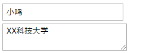
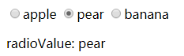
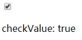
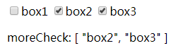
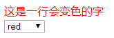

一、v-model绑定表单控件
v-model 双向数据绑定；一般用于表单元素，会忽略表单元素的value、checked、selected的初始值，且将Vue实例的数据作为数据来源。
1. 单行文本框 input[type="text"] 、多行文本框 textarea
v-model值绑定到value属性；
1 <body>
2 <div id="app">
3 <input type="text" v-model="username" value="我是初始值，但是我被忽略了"><br/>
4 <textarea v-model="schoolname" value="我是初始学校：北大青鸟"></textarea><br/>
5 </div>
6 <script src="./vue.js"></script>
7 <script>
8 var vm = new Vue({
9 el:'#app',
10 data:{
11 username:'小鸣',
12 schoolname:'XX科技大学'
13 }
14 })
15 </script>
16 </body>运行图：
2. 单选框 input[type="radio"]
v-model 值绑定到 value属性；
1 <body>
2 <div id="app" style="padding-left:10px;">
3 <input type="radio" name="fruit" value="apple" v-model="radioValue">apple
4 <input type="radio" name="fruit" value="pear" v-model="radioValue">pear
5 <input type="radio" name="fruit" value="banana" v-model="radioValue">banana
6 <p>radioValue: {{radioValue}}</p>
7 </div>
8 <script src="./vue.js"></script>
9 <script>
10 var vm = new Vue({
11 el:'#app',
12 data:{
13 radioValue:'pear',
14 }
15 })
16 </script>
17 </body>运行图： 
3. 多选框 input[type="checkbox"]
v-model 值为布尔值（true、false），绑定到 checked属性；
1 <body>
2 <div id="app" style="padding-left:10px;">
3 <input type="checkbox" v-model="checkValue"><br/>
4 <p>checkValue: {{checkValue}}</p>
5 </div>
6 <script src="./vue.js"></script>
7 <script>
8 var vm = new Vue({
9 el:'#app',
10 data:{
11 checkValue:true
12 }
13 })
14 </script>
15 </body>运行图： 
v-model 值为数组，绑定到 value属性（checkbox的vulue属性值必须要有）；
1 <body>
2 <div id="app" style="padding-left:10px;">
3 <input type="checkbox" v-model="moreCheck" value="box1">box1
4 <input type="checkbox" v-model="moreCheck" value="box2">box2
5 <input type="checkbox" v-model="moreCheck" value="box3">box3
6 <p>moreCheck: {{moreCheck}}</p>
7 </div>
8 <script src="./vue.js"></script>
9 <script>
10 var vm = new Vue({
11 el:'#app',
12 data:{
13 moreCheck:['box2','box3']
14 }
15 })
16 </script>
17 </body>运行图： 
二、v-model与v-bind结合使用
v-bind绑定属性，例如 v-bind:class="className"，缩写为 :class="className"；
1 //结合v-bind和v-model，实现效果：修改select选中值，从而给div绑定不同的类名，进而改变div的字体颜色；
2 <style>
3 .blue{color:blue;}
4 .red{color:red;}
5 .green{color:green;}
6 </style>
7 <body>
8 <div id="app">
9 <div :class="selectValue">这是一行会变色的字</div>
10 <select v-model="selectValue">
11 <option value="blue">blue</option>
12 <option value="red">red</option>
13 <option value="green">green</option>
14 </select>
15 </div>
16 <script src="./vue.js"></script>
17 <script>
18 var vm = new Vue({
19 el:'#app',
20 data:{
21 selectValue:'red'
22 }
23 })
24 </script>
25 </body>
运行图： 